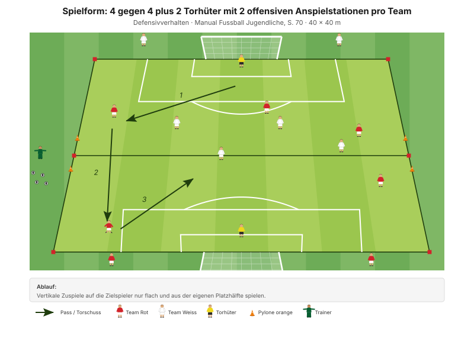
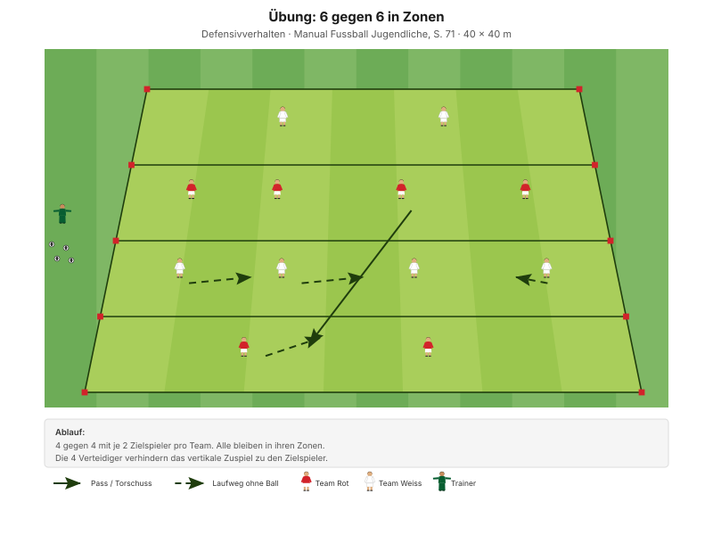

Pressing ist keine Frage des Einsatzes, sondern der Reihenfolge: Erst wird der Passweg zugestellt, dann wird attackiert. Wer umgekehrt vorgeht, läuft ins Leere.
"Ballorientiert, kompakt und situationsangepasst verteidigen" Erscheinungsform D1, Manual Fussball Jugendliche, S. 69
Der Coachingsatz des Abends: Positionen der Offensivspieler erkennen und Passwege schliessen. Nicht dem Ball hinterherlaufen – sondern dorthin stellen, wo der Ball hinsoll.
Das Manual fragt in den Entwicklungsfragen ausdrücklich "Wer kommuniziert wann, was, wie?", beantwortet es aber nicht. Für D-Junioren reichen drei feste Kommandos:
Diese drei Rufe stehen so nicht in den J+S-Unterlagen – sie sind eine eigene Ergänzung. Aus allgemeinem Fussballwissen: mehr als drei Kommandos merkt sich ein D-Junior im Spiel nicht.
| Zeit | Min | Teil | Inhalt |
|---|---|---|---|
| 0–4 | 4 | Besammlung | Thema ansagen, Gruppen einteilen |
| 4–16 | 12 | E1 | Pylonentore schliessen · Big 4 zwischen den Wiederholungen |
| 16–22 | 6 | E2 | 2 Teams gegen 1 Team mit Toren |
| 22–30 | 8 | E3 | Sprint und Torschuss blocken (Explosivität) |
| 30–45 | 15 | H1 | 3 gegen 3 plus 2 Torhüter mit Anspielstationen |
| 45–48 | 3 | Pause | Trinken, Umbau |
| 48–70 | 22 | H2 | 6 gegen 6 in Zonen |
| 70–82 | 12 | Abschluss | Freies Spiel 5 gegen 5 plus 2 Torhüter |
| 82–90 | 8 | Ausklang | Cool-down, zwei Entwicklungsfragen, Verabschiedung |
| Total | 90 |
Einstieg 26 · Hauptteil 37 · Abschluss 20 Min. – nach dem Trainingsschema des Manuals (S. 43).
Nur einmal umbauen: Die Pylonentore des Einstiegs werden in der Pause zu den Anspielzonen von H1 und H2 umgestellt.
Eigene Skizze · Platzaufteilung
Nur einmal aufbauen – das Einstiegsfeld liegt im späteren Spielfeld.
12 Minuten · 32 × 24 m · 3 Teams à 4 · alle 12 Spieler
Eigene Skizze · Pylonentore schliessen
3 Wiederholungen à 1'30''–2' – zwischen den Wiederholungen je zwei Präventionsübungen.
"Positionen der Offensivspieler erkennen und Passwege durch die Tore schliessen" SFV-Lernbaustein "Einstieg TA: Gefährliche Räume erkennen und Passwege schliessen", Phase 1
Warum zwei Tore mehr als Verteidiger: Die Form ist bewusst nicht lösbar durch Zudecken. Sie zwingt zur Auswahl – und damit zur Absprache, welches Tor gerade das gefährlichste ist. Das ist Pressing im Kern.
Je zwei Übungen zwischen den Wiederholungen, 25 Sekunden pro Übung:
| Bereich | Übung | Worauf achten |
|---|---|---|
| Fussgelenk | Einbeinsprünge seitlich | Bei der Landung knickt das Knie nicht ein, Oberkörper leicht nach vorne, Blick nach vorne. |
| Knie | Kniebeuge mit Spannung | Fersen auf dem Boden, Oberkörper gerade, Schultern nach hinten, Blick nach vorne. |
| Hüfte | Mobilität in tiefer Position | Die Fersen bleiben in Kontakt mit dem Boden, der Blick ist nach vorne gerichtet. |
| Hamstrings | Leg Curl mit Miniband | Knie bleiben hüftbreit, Standbein leicht gebeugt. |
"Arbeit mit Zeitvorgaben – nicht mit Anzahl Wiederholungen." Prinzip Körperstabilität, Manual Fussball Jugendliche, S. 75
Zwei Punkte pro Übung nennen, nicht mehr. Qualität vor Tempo.
6 Minuten · gleiches Feld · 3 Wiederholungen à 1'30''–2'
"Positionen der Offensivspieler erkennen und Passwege durch die Tore schliessen" SFV-Lernbaustein "Einstieg TA: Gefährliche Räume erkennen und Passwege schliessen", Phase 2
Neu gegenüber E1: Die Balleroberung zählt jetzt. Damit wird das Zustellen zum Mittel, nicht zum Zweck – wer nur zumacht, gewinnt nichts.
8 Minuten · 2 Bahnen · Paare bilden
| Parameter | Vorgabe |
|---|---|
| Distanz | 15–30 m |
| Wiederholungen | 3 |
| Pause zwischen Wiederholungen | 1/15 (Belastung × 15) |
| Serien | 3 |
| Pause zwischen Serien | 1'30''–2' |
"Erholungszeit: 10- bis 20-fache Dauer der Belastungszeit, abhängig von der Laufdistanz. Vollständig erholen zwischen den Wiederholungen." Prinzipien Explosivität, Manual Fussball Jugendliche, S. 72
15 Minuten · 40 × 34 m · alle 12 Spieler
Manual-Vorlage · Diagramm 40 "4 gegen 4 plus 2 Torhüter mit 2 offensiven Anspielstationen pro Team" (S. 70)

Heute 3 gegen 3 statt 4 gegen 4 – sonst wären es 14 Spieler.
"Vertikale Zuspiele auf die Zielspieler/innen nur flach und aus der eigenen Platzhälfte spielen." Spielform, Manual Fussball Jugendliche, S. 70 (Diagramm 40) · 40 × 40 Meter
Die Gefahr kommt vertikal – und nur aus der eigenen Hälfte des Gegners. Damit ist für die Verteidiger klar, welchen Raum sie zumachen müssen: den direkten Weg nach vorne. Kein Rennen, sondern Stellungsspiel.
22 Minuten · 40 × 34 m · alle 12 Spieler
Manual-Vorlage · Diagramm 41 "6 gegen 6" (S. 71)

4 + 4 + 2 + 2 = genau 12. Diese Form passt ohne Anpassung auf den Kader.
"4 gegen 4 mit je 2 Zielspieler/innen pro Team. Alle bleiben in ihren Zonen. Die 4 Verteidiger/innen verhindern das vertikale Zuspiel zu den Zielspieler/innen." Übung, Manual Fussball Jugendliche, S. 71 (Diagramm 41) · 40 × 40 Meter
Weil alle in ihren Zonen bleiben, fällt das Hinterherlaufen als Option weg. Es bleibt nur Stellungsspiel: Vier Verteidiger, vier Passwege, und alle vier müssen gleichzeitig zu sein. Das geht nur, wenn geredet wird – die drei Rufe gehören hier laut eingefordert.
12 Minuten · gleiches Feld, kein Umbau
Keine Auflagen, keine Bonusregeln. Hier wird sichtbar, was von den 70 Minuten davor hängen geblieben ist.
8 Minuten · Cool-down im Gehen, dann Kreis in der Mitte
Zuerst 3–4 Minuten lockeres Auslaufen und Mobilität, dann der Kreis. Zwei Fragen – die Antworten kommen von den Spielern, nicht vom Trainer:
"Habt ihr die gegnerischen Angriffe erfolgreich unterbunden? Wenn nein, welches Prinzip habt ihr vernachlässigt? Was müsst ihr verbessern (individuell/als Gruppe)?"
"Hast du kommuniziert? Wie kommunizierst du noch besser? Wer kommuniziert wann, was, wie?" Entwicklungsfragen zur Spielphase "Wir haben den Ball nicht", Manual Fussball Jugendliche, S. 69
Material aufräumen – laut Teamregel Respekt Teamarbeit, nicht Strafe.
| Teil | Vorlage | Seite |
|---|---|---|
| E1 – E3 | SFV-Lernbaustein "Einstieg TA: Gefährliche Räume erkennen und Passwege schliessen", Phasen 1–3 | – |
| H1 | Spielform "4 gegen 4 plus 2 Torhüter mit Anspielstationen" (Diagramm 40) | 70 |
| H2 | Übung "6 gegen 6 in Zonen" (Diagramm 41) | 71 |
| Ziele, Coaching, Entwicklungsfragen | Kapitelkopf "Wir haben den Ball nicht" | 69 |
| Die drei Rufe | Eigene Ergänzung zur Manual-Frage "Wer kommuniziert wann, was, wie?" | 69 |
| Explosivität, Körperstabilität | Athletik und Gesundheit | 72, 75 |
| Trainingsaufbau | Trainingsschema (Abb. 19) | 43–45 |
Alle Seitenangaben beziehen sich auf das J+S Manual Fussball Jugendliche (BASPO/SFV, 2022). Spielerzahlen und Feldmasse sind auf einen Kader von 12 Spielern angepasst. Dieser Trainingsplan wurde mit Unterstützung von KI (Claude, Anthropic) erstellt.